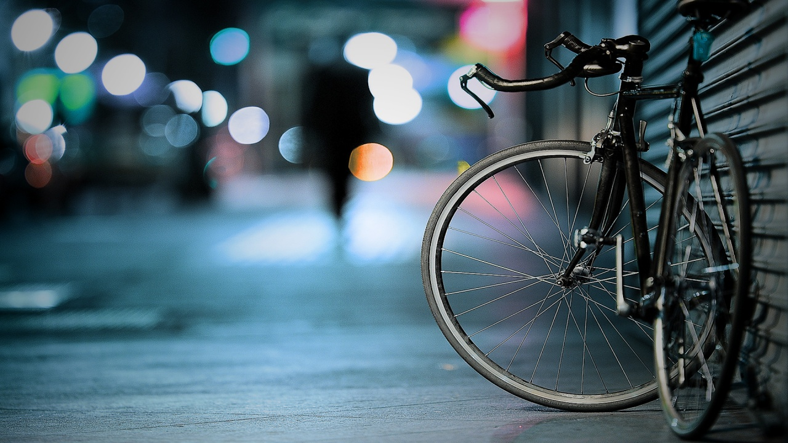

Learning Expereince at Aqua

The learning experience on the campus inspires our students to realize their full potential. Our students excel in academics by pitching themselves against the best in events held on campus and outside. No wonder, they win laurels at prestigious conferences and events held in the country and abroad to make a difference in their field in of interest. And going beyond academics you will find them preparing for wide range of events that test their creativity and ability to solve problems.
Alumini
Alumni contribute time, energy and expertise to help the fraternity grow, develop and prosper. The Alumni Association aims to facilitate lifelong learning through the exchange of ideas and knowledge. Alumni pool skills and apply available resources to enhance personal and career development for their memebers. Regardless of where they are, branches of the Alumni Association across the globe meet on January 26th and August 15th every year.
Student Experience
We started in 1988 as the first engineering college under the other group of institutions. Its vision has been to make its students professionally superior and ethically strong global manpower. Every activity here is focused in addressing student needs. It offers and facilitates academic excellence, leadership qualities, nurturing environment, and cutting edge infrastructure – everything students need to succeed. A unique educational system here will ensure that students gain not just depth and breath in their chosen area of specialization, but a holistic set of skills that will equip them to face the real world.